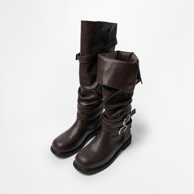
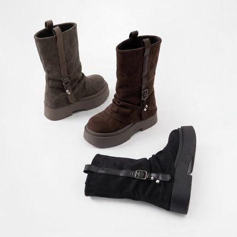
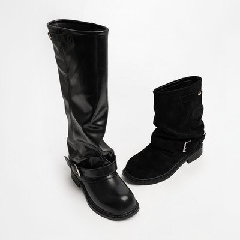
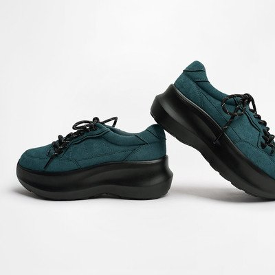

정연님 롱부츠 코디 (원본)
- 훅왼쪽 위 156cm 자막 고정 + 말풍선 한 줄, 거울 앞 전신
- 중간그 자리에서 한 바퀴 — 앞 · 옆 · 뒤가 6초 안에 다 지나가요
- 마지막아이템 캡처 네 장을 양옆에 띄우고 인사로 닫음
CHAAKAN × JUNGYEON · BOOTS GUIDE
착한구두 촬영 가이드 — 키작녀 나열형
부츠 세 켤레 + 스니커즈 한 켤레예요. 사이즈는 네 켤레 다 225로 보내드려요. 편안함·착화감은 네 켤레 다 기본이에요. 영상에선 아래 각자 다른 점을 보여줘요.
같은 자리에서 이 순서로 갈아 신어요. 켤레마다 다른 점이 하나씩 있어요 — 종아리 커버 / 굽 높이 / 숏 기장.

1번
2번
3번부츠 세 켤레 나열에 섞지 말고 한 컷 따로 가요. 착장만 부츠 때와 다르게 갈아입고 찍어요.

번외최근 네 편 모두 첫 프레임에 이미 글자가 떠 있어요. 인사도, 얼굴 토킹도, 예고도 없어요. 롱부츠 코디편은 숫자 자막을 처음부터 끝까지 왼쪽 위에 고정해 뒀고, 나머지는 타이틀 두 줄을 띄운 뒤 1.5초 만에 1번으로 넘어가요.
가디건편도 신발편도 바뀌는 건 딱 하나예요. 자리·조명·안에 입은 옷이 그대로라서 제품만 비교돼요. 부츠편도 똑같이, 같은 자리에서 1 → 2 → 3번 순서로 부츠만 갈아 신어요. 컷마다 위에 제품명, 아래에 한 줄 코멘트. "상의부터 부츠까지"편에서 이미 **손에 들고 → 바로 신고 전신** 흐름을 쓰셨는데, 그걸 켤레마다 반복하면 돼요. 벌키 스니커즈는 여기 섞지 않고 맨 뒤에 따로 가요.
가디건은 상반신 한 컷이면 끝나지만 부츠는 각도마다 다른 게 보여요. 앉아야 주름이 보이고, 옆에서 봐야 굽이 보이고, 뒤에서 봐야 끈이 보여요. 첫 묶음이 정연님이 이미 찍으신 컷이고, 그 아래 네 가지에서 그 부츠에 맞는 걸 골라 더하면 돼요.
아래 네 가지는 전부 이 세 컷의 확장이에요. 새로운 방식이 아니라 각도만 추가!
쪼그려 앉거나 다리를 꼬면 발목 주름이 잡히고, 손으로 짚는 곳이 그 컷의 자막이 돼요.
이 구도엔 → ②무비 — 스웨이드가 발목에서 자글자글 구겨지는 게 앉아야 보여요 · ③블래티 숏 — 레더 구김과 발목 벨트 스트랩을 손으로 짚어 주세요
전신 말고 하체만 담는 컷도 한 장. 허리 아래부터 발끝까지가 한 화면에 꽉 차게.
이 구도엔 → ③블래티 숏 — 발목 바로 위에서 끝나는 기장이라 맨다리와 경계가 선명해요 · ①페탈 — 종아리를 다 덮는 라인이 정면에서 한 번에 보여요
카메라를 바닥 가까이 내리면 굽·플랫폼 두께가 눈높이로 와요. 롱부츠는 반드시 옆 컷.
이 구도엔 → ①페탈 — 총높이 43.5cm가 한 화면에 들어오게 · ②무비 — 바닥 가까이 내려서 7cm 통굽 두께를 보여 주세요
뒤 디테일이 있는 부츠만 찍어요. 없으면 건너뛰어도 괜찮아요.
이 구도엔 → 이번 세 켤레는 포인트가 앞·옆에 있어서 뒤 컷은 선택이에요. 찍는다면 ①페탈을 롱으로 신고 뒤에서 한 컷
정연님은 네 편 다 마지막 2~3초를 아이템 캡처 또는 가격 한 줄로 닫아요. 부츠편도 똑같이, 글(캡션)과 화면 자막 양쪽에 "댓글에 [부츠] 남겨주시면 구매 링크랑 15% 할인코드 보내드릴게요"를 넣어요. 키워드는 [부츠]로 갈게요.
나열형 부츠 영상에서 이것만 피하세요.
8개 중 0개 체크했어요.
누르면 소리와 함께 처음부터 재생돼요. 앞의 두 편이 정연님 원본이에요.